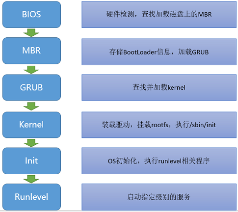

前言
Linux是一种自由和开放源代码的类UNIX操作系统。该操作系统的内核由林纳斯·托瓦兹在1991年10月5日首次发布。在加上用户空间的应用程序之后，成为Linux操作系统。Linux是自由软件和开放源代码软件发展中最著名的例子。
接触Linux的时间也不算短了，一直都是直接使用Linux操作系统进行一些工作，很少去了解系统从开机到能使用的整个过程，感觉有需要好好理解下整个系统的启动过程，故写这篇博客加深一下理解。
启动过程
先通过一张图来简单了解下整个系统启动的流程，整个过程基本可以分为POST–>BIOS–>MBR(GRUB)–>Kernel–>Init–>Runlevel。下面会详细说明每个过程的作用。

-
BIOS
BIOS(Basic Input/Output System)，基本输入输出系统，该系统存储于主板的ROM芯片上，计算机在开机时，会最先读取该系统，然后会有一个加电自检过程，这个过程其实就是检查CPU和内存，计算机最基本的组成单元(控制器、运算器和存储器)，还会检查其他硬件，若没有异常就开始加载BIOS程序到内存当中。详细的BIOS功能，这边就不说了，BIOS主要的一个功能就是存储了磁盘的启动顺序，BIOS会按照启动顺序去查找第一个磁盘头的MBR信息，并加载和执行MBR中的Bootloader程序，若第一个磁盘不存在MBR，则会继续查找第二个磁盘(PS：启动顺序可以在BIOS的界面中进行设置)，一旦BootLoader程序被检测并加载内存中，BIOS就将控制权交接给了BootLoader程序。
-
MBR
MBR(Master Boot Record)，主引导记录，MBR存储于磁盘的头部，大小为512bytes，其中，446bytes用于存储BootLoader程序，64bytes用于存储分区表信息，最后2bytes用于MBR的有效性检查。
-
GRUB
GRUB(Grand Unified Bootloader)，多系统启动程序，其执行过程可分为三个步骤：
-
Stage1：这个其实就是MBR，它的主要工作就是查找并加载第二段Bootloader程序(stage2)，但系统在没启动时，MBR根本找不到文件系统，也就找不到stage2所存放的位置，因此，就有了stage1_5
-
Stage1_5：该步骤就是为了识别文件系统
-
Stage2：GRUB程序会根据/boot/grub/grub.conf文件查找Kernel的信息，然后开始加载Kernel程序，当Kernel程序被检测并在加载到内存中，GRUB就将控制权交接给了Kernel程序。
PS：实际上这个步骤/boot还没被挂载，GRUB直接识别grub所在磁盘的文件系统，所以实际上应该是/grub/grub.conf文件，该配置文件的信息如下：
grub.conf:
-
#boot=/dev/sda
default=0 #设定默认启动的title的编号，从0开始
timeout=5 #等待用户选择的超时时间
splashimage=(hd0,0)/boot/grub/splash.xpm.gz #GRUB的背景图片
hiddenmenu #隐藏菜单
title CentOS (2.6.18-194.el5PAE) #内核标题
root (hd0,0) #内核文件所在的设备
kernel /vmlinuz-2.6.18-194.el5PAE ro root=LABEL=/ #内核文件路径以及传递给内核的参数
initrd /initrd-2.6.18-194.el5PAE.img #ramdisk文件路径
```
-
Kernel
Kernel，内核，Kernel是Linux系统最主要的程序，实际上，Kernel的文件很小，只保留了最基本的模块，并以压缩的文件形式存储在硬盘中，当GRUB将Kernel读进内存，内存开始解压缩内核文件。讲内核启动，应该先讲下initrd这个文件，
initrd(Initial RAM Disk)，它在stage2这个步骤就被拷贝到了内存中，这个文件是在安装系统时产生的，是一个临时的根文件系统(rootfs)。因为Kernel为了精简，只保留了最基本的模块，因此，Kernel上并没有各种硬件的驱动程序，也就无法识rootfs所在的设备，故产生了initrd这个文件，该文件装载了必要的驱动模块，当Kernel启动时，可以从initrd文件中装载驱动模块，直到挂载真正的rootfs，然后将initrd从内存中移除。
Kernel会以只读方式挂载根文件系统，当根文件系统被挂载后，开始装载第一个进程(用户空间的进程)，执行/sbin/init，之后就将控制权交接给了init程序。
-
Init
init，初始化，顾名思义，该程序就是进行OS初始化操作，实际上是根据/etc/inittab(定义了系统默认运行级别)设定的动作进行脚本的执行，第一个被执行的脚本为/etc/rc.d/rc.sysinit，这个是真正的OS初始化脚本，简单讲下这个脚本的任务(可以去看看实际脚本，看看都做了什么)：
- 激活udev和selinux;
- 根据/etc/sysctl.conf文件，来设定内核参数;
- 设定系统时钟;
- 装载硬盘映射;
- 启用交换分区;
- 设置主机名;
- 根文件系统检测，并以读写方式重新挂载根文件系统;
- 激活RAID和LVM设备;
- 启用磁盘配额;
- 根据/etc/fstab，检查并挂载其他文件系统;
- 清理过期的锁和PID文件
执行完后，根据配置的启动级别，执行对应目录底下的脚本，最后执行/etc/rc.d/rc.local这个脚本，至此，系统启动完成。
-
Runlevel
runlevel，运行级别，不同的级别会启动的服务不一样，init会根据定义的级别去执行相应目录下的脚本，Linux的启动级别分为以下几种：
0：关机模式
1：单一用户模式(直接以管理员身份进入)
2：多用户模式（无网络）
3：多用户模式（命令行）
4：保留
5：多用户模式（图形界面）
6：重启
在不同的运行级别下，/etc/rc.d/rc这个脚本会分别执行不同目录下的脚本：
Runlevel 0 – /etc/rc.d/rc0.d/
Runlevel 1 – /etc/rc.d/rc1.d/
Runlevel 2 – /etc/rc.d/rc2.d/
Runlevel 3 – /etc/rc.d/rc3.d/
Runlevel 4 – /etc/rc.d/rc4.d/
Runlevel 5 – /etc/rc.d/rc5.d/
Runlevel 6 – /etc/rc.d/rc6.d/
这些目录下的脚本只有K*和S*开头的文件，K开头的文件为开机需要执行关闭的服务，S开头的文件为开机需要执行开启的服务。
参考
http://www.thegeekstuff.com/2011/02/linux-boot-process/
[http://www.ibm.com/developerworks/library/l-linuxboot/](